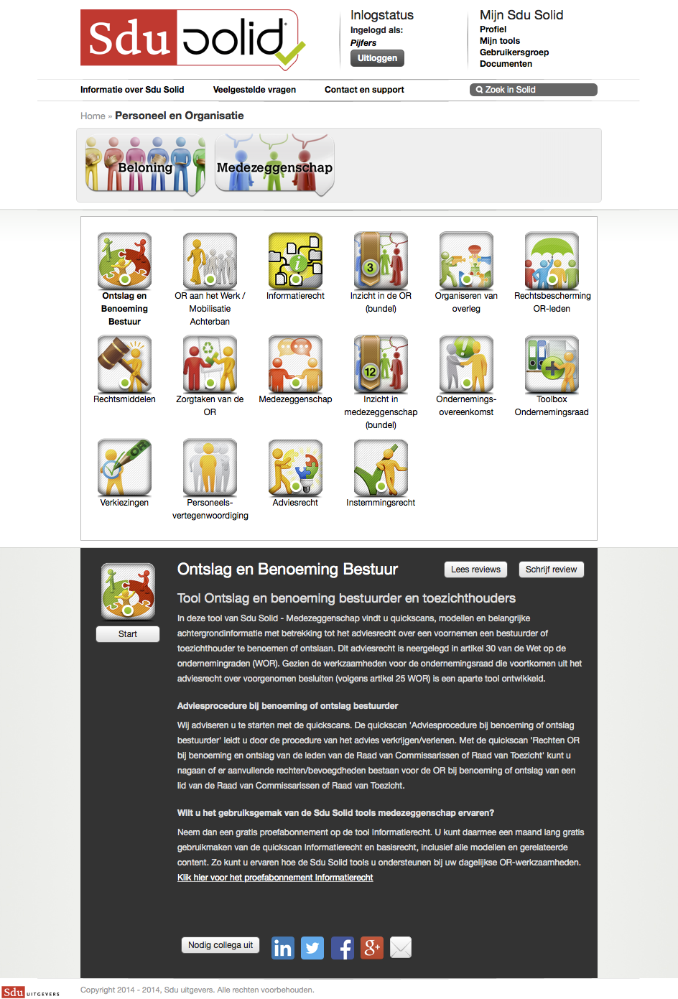
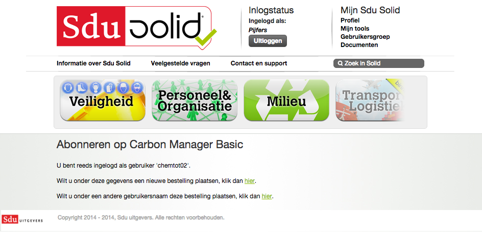
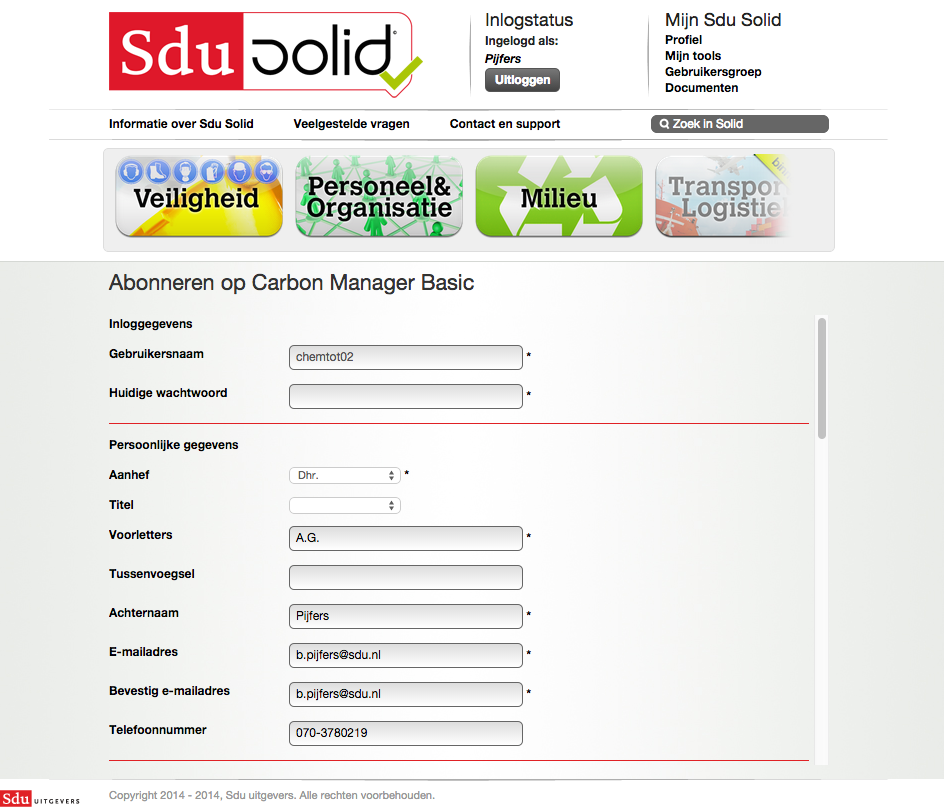

Komt voor het eerst op de ingelogde homepage.

Op deze pagina ziet de gebruiker de ingelogde variant van de home. Hier worden geabonneerde alerts weergegeven en kan er genavigeerd worden naar nieuwe tools, tools van de gebruikers en tools van de gebruikersgroep waarin de gebruiker zich bevindt. De gebruiker klikt vervolgens door op een thema.
Emoties gebruiker
De gebruiker vraagt zich af wat alerts zijn en hoe hij bij een tool komt. De gebruiker is erg verward. Hij weet niet waar hij nu verder moet.
- Het is mogelijk niet duidelijk wat alerts zijn
- Het is mogelijk niet duidelijk genoeg hoe de gebruiker bij zijn tools kan komen, omdat het te hoog in beeld staat.
Kiest een thema
 Op deze pagina ziet de gebruiker de subthema’s die onder het betreffende thema vallen.
Op deze pagina ziet de gebruiker de subthema’s die onder het betreffende thema vallen.
Emoties gebruiker
Door Hans zijn banner-blindheid, zag de gebruiker het thema voor een banner aan. Omdat hij niet verder kwam is hij toch daarop gaan klikken. Hij is verrast dat hij nu naar een thema pagina gaat.
- Themategels ogen teveel als banners
Kiest een subthema
 Op deze pagina ziet Hans de tools die bij het subthema horen.
Op deze pagina ziet Hans de tools die bij het subthema horen.
Kiest een tool
 De gebruiker ziet een specifieke pagina van een tool en kan zich hier op de tool abonneren/de tool aanschaffen.
Emoties gebruiker
De gebruiker is verward. Hij klikte op een tool en vervolgens lijkt er niets te veranderen aan het scherm. Furieus klikt hij op inzicht in medezeggenschap, maar er lijkt nog steeds niets te gebeuren. Vervolgens gaat hij toch scrollen en komt er achter dat er een scherm onder de ‘fold’ (zichtbare deel van het scherm) is bij gekomen.
- Toolkeuze en toolcontent staan problematisch ver van elkaar af.
- Het is mogelijk dat gebruikers afhaken omdat er niet zichtbaar in het scherm feedback wordt gegeven dat er iets is veranderd op de pagina.
Abonneren op tool
 De gebruiker vult het aantal personen in de organisatie in.
De gebruiker vult het aantal personen in de organisatie in.
Bevestigen juiste gebruikersaccount
 De gebruiker bevestigt dat het huidige ingelogde account de juiste is.
Emoties gebruiker
De gebruiker is weer verward. Hoezo juiste account? Heb ik toch zojuist geregistreerd? Als het niet goed is log ik wel uit. Ik wil iets afnemen, maar wat nu? Maar even gaan lezen dan… Ok, bestelling plaatsen staat verderop, dat zal het wel zijn…
- Mogelijk onduidelijk: Als gebruiker op de knop klikt, koop hij dan gelijk een abonnement of gaat hij de winkel in?
- Mogelijk onduidelijk: Waarom zou een account niet het juiste zijn?
- Mogelijk onduidelijk wat de gebruiker nu moet doen.
Formulier: Controleren gegevens 1

- Het is mogelijk dat gebruikers afhaken omdat zij gegevens moeten controleren die zij net hebben ingevuld bij de registratie.
Formulier Controleren gegevens 2

Formulier: Referentie invullen

- Het is mogelijk voor gebruikers onduidelijk wat er met de term ‘referentie’ wordt bedoelt.
Formulier: Voorwaarden accepteren

Bevestiging
De gebruiker ontvangt een e-mailbevestiging dat hij zich heeft geabonneerd op een tool.